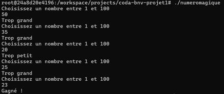
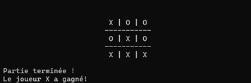
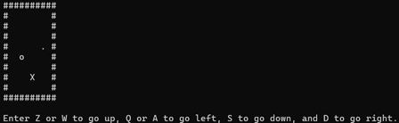

Dans le cadre de mes cours, j'ai eu l'occasion de créer divers projets.
En voici une présentation :
Le numéro magique
Le principe est simple. L'ordinateur choisit au hasard un numéro entre 1 et 100.

L'utilisateur doit essayer de deviner ce numéro, et à chaque essai, l'ordinateur dit si le numéro est inférieur ou supérieur.
Accéder à la page GitHub
Tic Tac Toe
Il s'agit du morpion.

L'utilisateur joue contre l'ordinateur ; chacun va choisir une case à chaque tour et il faut aligner trois symboles.
Accéder à la page GitHub
Sokoban
Le but est de pousser une boîte à un objectif.

L'ordinateur génère une carte de jeu où il place aléatoirement le joueur, la boîte et l'objectif.
En utilisant les contrôles ZQSD ou WASD, le joueur doit se déplacer sur la carte et pousser la boîte à l'objectif.
Accéder à la page GitHub